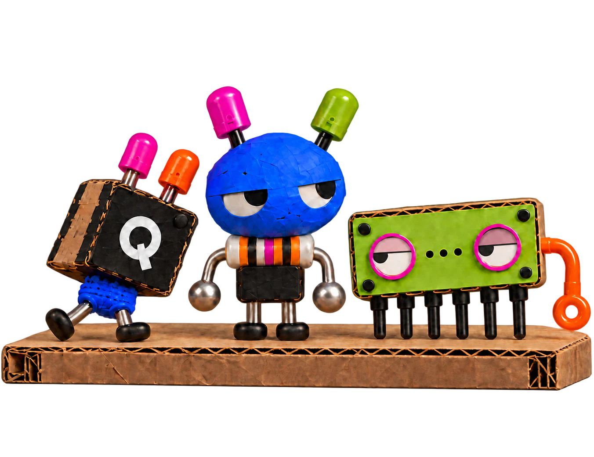
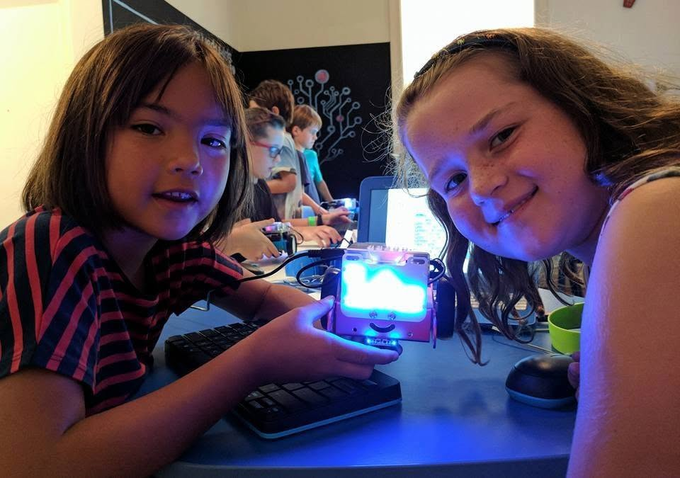
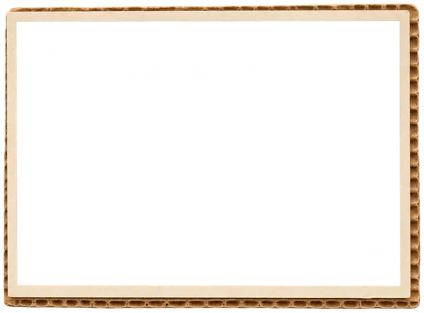
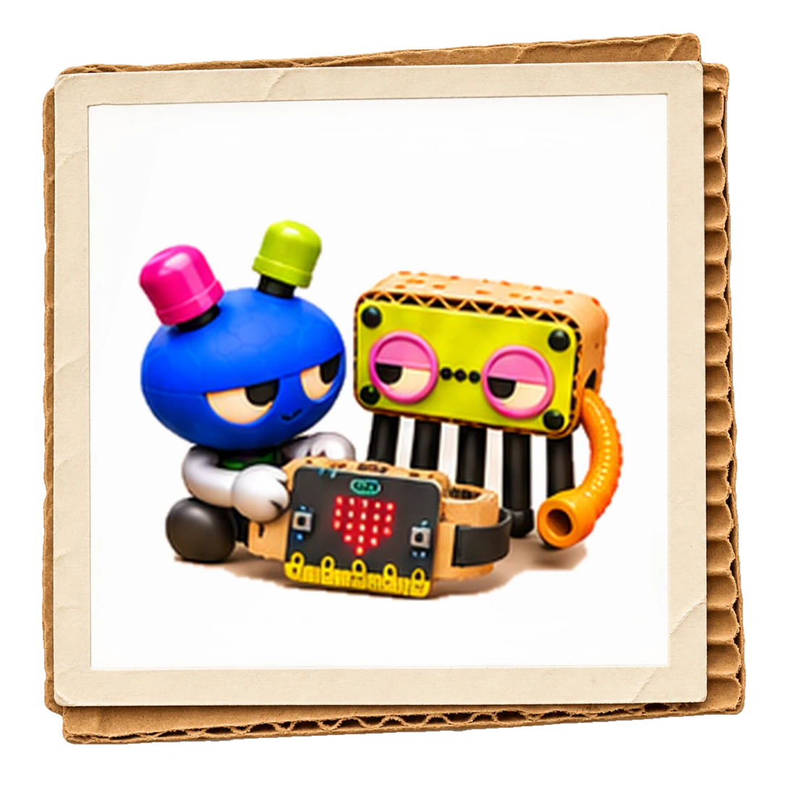
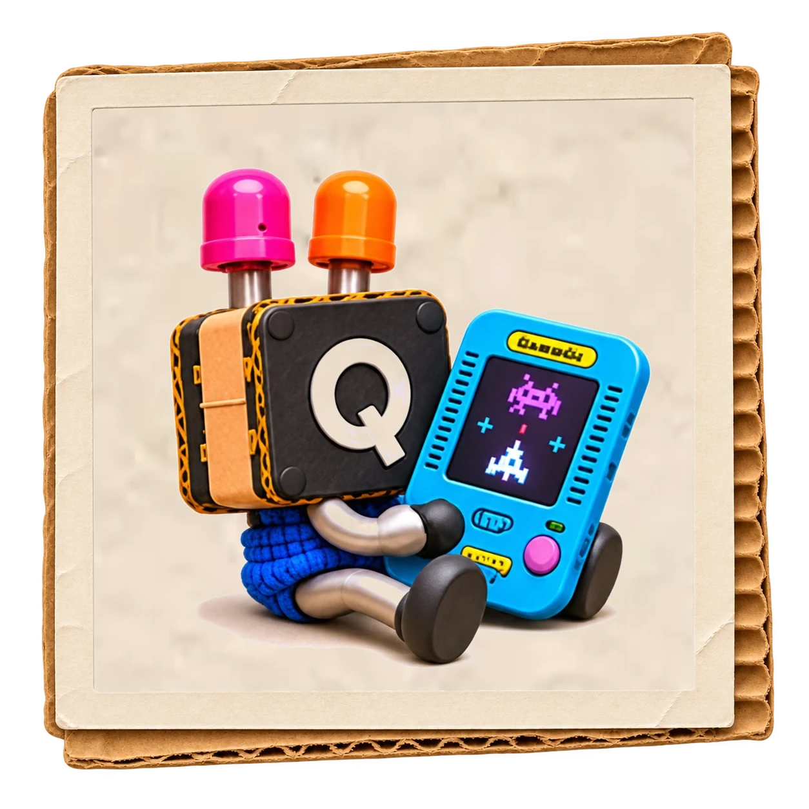
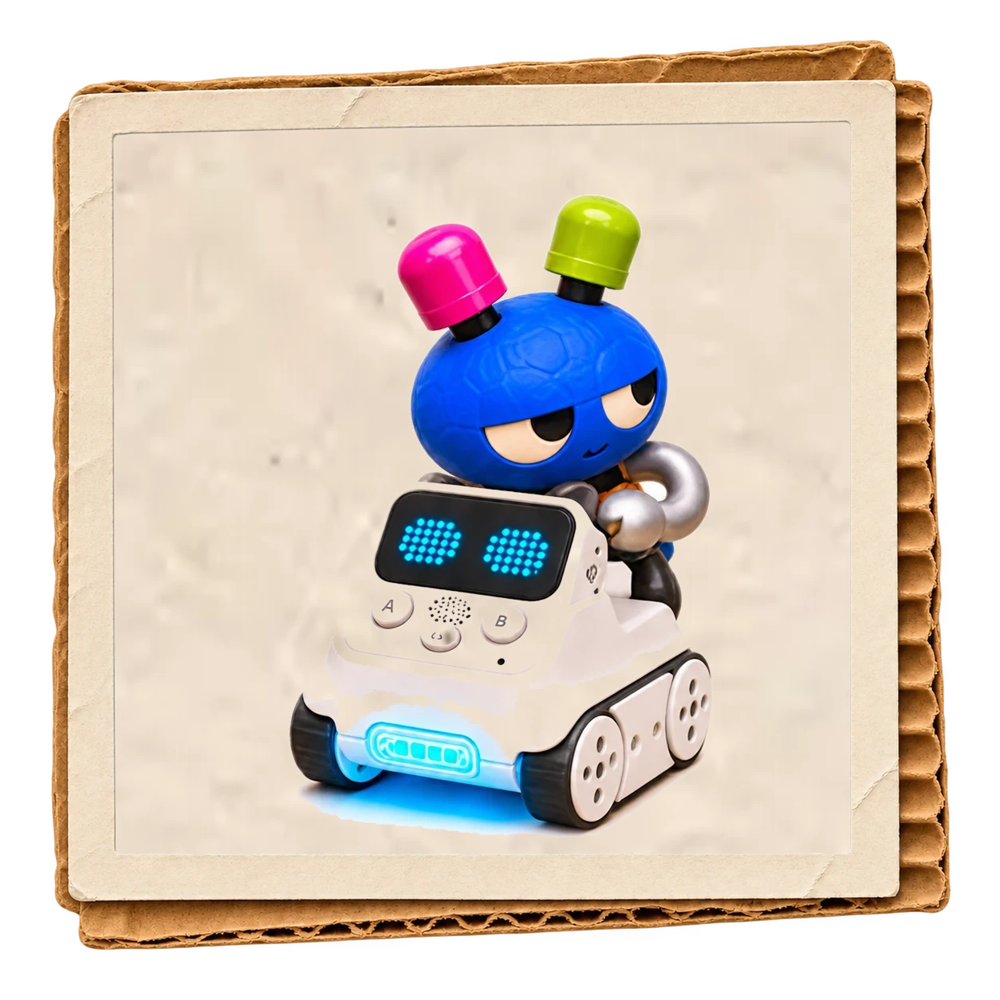
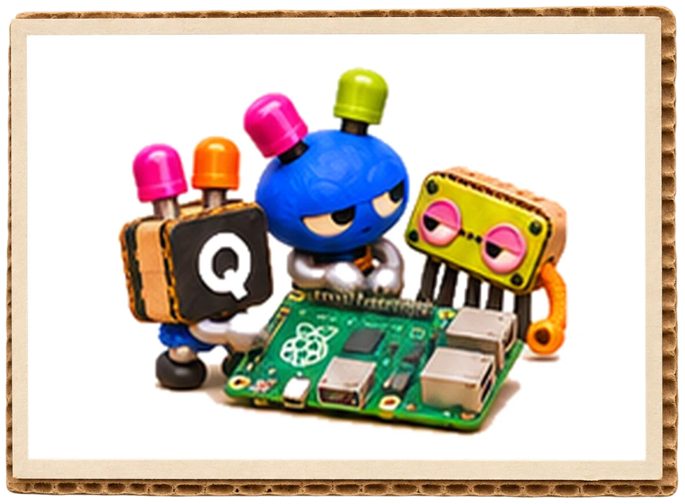

toolswe make stuff with




KIT & CODOODLE
A game. A robot. A website. Something that lights up, moves, makes noise or responds when you wave your hand.
We make things with technology and teach people of all ages to do the same.

GET STARTED
Complete beginners and experienced makers
Maybe you've got an idea already. Maybe you've seen something interesting and want to know how it works. Both are good places to start.
You don't need to know which tools you need before you arrive. We choose them to suit your interests, experience and the thing you want to make.
MICRO:BIT
One little computer. Lots of ideas.
Take the BBC micro:bit. It has buttons, lights and sensors.
One maker might build a reaction game. Another might design a traffic control system. Someone else might use it to create an artwork that responds to movement.
Same equipment. Different ideas. No age-based rules about who gets to make what.

micro:bit
PROJECTS
Some projects live entirely on a screen. Others connect software to objects in the real world.
GAMES & WORLDS
Games & digital worlds
Design characters, invent rules, build levels and program what happens when someone presses Play. Make browser games, arcade games or interactive worlds.

GameGo
ROBOTS
Robots & things that move
Program robots to follow lines, navigate obstacles or respond to their surroundings. Experiment with sensors and control using robots, self-driving cars and programmable drones.

Codey Rocky
ELECTRONICS
Electronics & physical computing
Make a reaction game, a movement alarm or a gadget that responds to sound, light or touch. Use BBC micro:bits, Raspberry Pis, CodeBugs, Makey Makeys and electronic components.

Raspberry Pi
WEBSITES & APPS
Websites, apps & interactive experiences
Build websites and apps, make digital art or experiment with AI, augmented reality and virtual reality. View 3D objects through a MERGE Cube or connect an artwork to sensors.
WHY MAKE THINGS
Making gives learning a reason
Coding, electronics and design become useful when there's something you want them to do.
You learn to break an idea into manageable parts, test your work and figure out what to try next. Understanding how something works means you can change it.
YOUR IDEA
What do you want it to do?
We ask this question a lot.
“I want to make a game” is a good start. But what does the player actually do? How do they score points? What happens if they lose? Can they cheat?
Someone will certainly try.
Getting an idea out of your head and explaining it clearly is an important part of making it happen.
We work alongside you, explaining unfamiliar concepts, demonstrating techniques and helping you investigate problems.
And as you learn more, you make more of the decisions.
CODE & TOOLS
Where does coding fit in?
Coding is one of the tools we use to make things work. Sometimes we connect coloured blocks. Sometimes we type instructions. Both are coding.
Scratch — Games, animations and interactive projects using blocks.
MakeCode — Programs for micro:bits and arcade games, using blocks or text.
Python — Games, electronics, Raspberry Pi projects and automation.
JavaScript — Interactive websites, browser games and creative coding.
HTML & CSS — Markup and styles for making websites, rather than programming languages.
There's no compulsory progression from Scratch to Python to JavaScript. We choose what makes sense for the project.
WHERE?
Upstairs at our studio in Marrickville, Sydney.
WHEN?
Get making

Explore